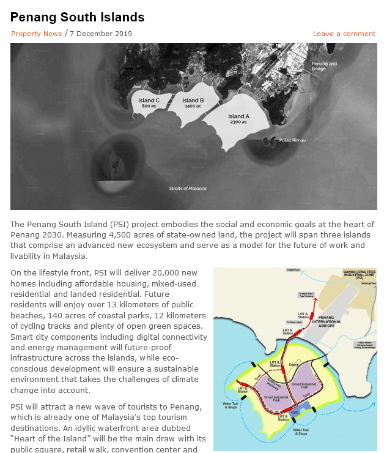
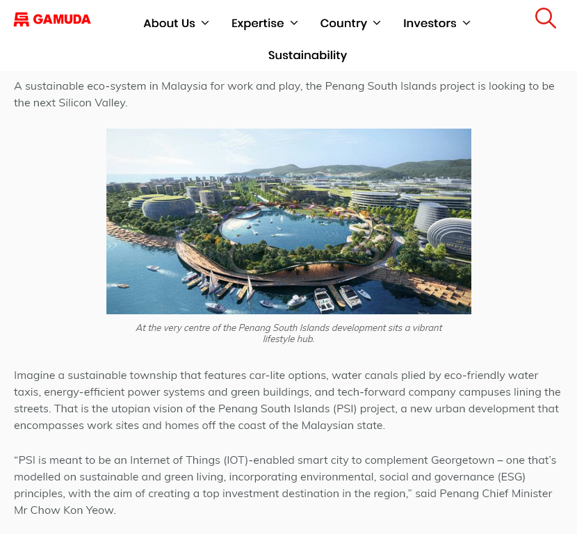

Property Talk: Penang South Islands
Generating Summary With ChatGPT
Prompt:
The Penang South Island (PSI) project embodies the social and economic goals at the heart of Penang 2030. Measuring 4,500 acres of state-owned land, the project will span three islands that comprise an advanced new ecosystem and serve as a model for the future of work and livability in Malaysia.
psi-map-srsOn the lifestyle front, PSI will deliver 20,000 new homes including affordable housing, mixed-used residential and landed residential. Future residents will enjoy over 13 kilometers of public beaches, 140 acres of coastal parks, 12 kilometers of cycling tracks and plenty of open green spaces. Smart city components including digital connectivity and energy management will future-proof infrastructure across the islands, while eco-conscious development will ensure a sustainable environment that takes the challenges of climate change into account.
PSI will attract a new wave of tourists to Penang, which is already one of Malaysia’s top tourism destinations. An idyllic waterfront area dubbed “Heart of the Island” will be the main draw with its public square, retail walk, convention center and Instagram-worthy views. It will also offer a vibrant mix of entertainment and lifestyle options that rival those in popular high streets around the world.
A robust integrated transit system will make it easy for residents and tourists to commute throughout PSI. The system will include highway, light rail transit, trams and water taxi services. Walkability and bike-ability also make personal mobility a great option for thoughtful connectivity.
A Place to Live, A Place to Work
Where electronics and manufacturing for low-value sectors once drove Penang’s economy, the future lies in advanced manufacturing and R&D facilities for the next generation of digital technologies in aim for high-value E&E sector.
PSI will include an 800-acre Smart Industrial Park that will create a range of new jobs for the country’s young population and draw global companies looking to expand their businesses and tap into the potential of Southeast Asia’s burgeoning middle class. The Smart Industrial Park will cater to companies producing everything from automotive electronics and mobile devices to cloud computing technology and digital medical devices.
The Smart Industrial Park will be a boon for companies looking for new industrial land to locate high-tech production facilities, house a campus for software and business services and much more. With 480 multinationals already operating in nearby Bayan Lepas Free Industrial Zone – an area that has driven economic growth in Penang for forty years – the challenge won’t be attracting companies, it will be finding space for everyone that wants to take advantage of what the Smart Industrial Park has to offer.
Laying the Foundations of the Future
Like all of the best things, developing PSI will take time. Phase one of the PSI work is scheduled to commence in the second half of 2020, and will focus on developing the first 2,300-acre island over the course of ten years. Yet, the first benefits will come as soon as that begins. Reclamation during phase one is expected to create 9 billion ringgit worth of new construction jobs.
Throughout the course of its development and long after its completion, PSI will be a catalyst for Malaysia’s economy and help the country achieve high-income status along the way. Once PSI reaches its full potential, it will serve a model for how people in one of Asia’s most dynamic countries will live, work and play in the future.
Give me a summary
The Penang South Island (PSI) project, aligned with the goals of Penang 2030, spans 4,500 acres across three islands, aiming to create a modern ecosystem integrating social, economic, and environmental sustainability. It will feature 20,000 new homes, diverse recreational spaces, smart city infrastructure, and eco-conscious development to address climate challenges. With an emphasis on advanced manufacturing and R&D facilities, particularly in high-value electronics and digital technologies, PSI seeks to attract global companies and create new job opportunities. An integrated transit system will enhance accessibility, while phase one of the project is expected to generate significant construction employment. Ultimately, PSI aims to serve as a model for future living, working, and leisure in Malaysia, contributing to the country's economic growth and advancement towards high-income status.
Gamuda: Penang South Islands
Generating Summary With ChatGPT
Prompt:
A sustainable eco-system in Malaysia for work and play, the Penang South Islands project is looking to be the next Silicon Valley. At the very centre of the Penang South Islands development sits a vibrant lifestyle hub.
Imagine a sustainable township that features car-lite options, water canals plied by eco-friendly water taxis, energy-efficient power systems and green buildings, and tech-forward company campuses lining the streets. That is the utopian vision of the Penang South Islands (PSI) project, a new urban development that encompasses work sites and homes off the coast of the Malaysian state.
“PSI is meant to be an Internet of Things (IOT)-enabled smart city to complement Georgetown – one that’s modelled on sustainable and green living, incorporating environmental, social and governance (ESG) principles, with the aim of creating a top investment destination in the region,” said Penang Chief Minister Mr Chow Kon Yeow.
Among its green ambitions, PSI aims to achieve a 50 per cent reduction in CO2e emissions compared to ‘business as usual’ by 2030. This will be accomplished through various means, including a 40 per cent reduction in urban planning emissions and an 80 per cent reduction in transport emissions. For those who will work and live there, this would mean no traffic jams, reduced air pollution and a cleaner living space.
An extensive network of landscaped waterways and public locales add to the utopian feel.
More than 20 per cent of the land will also be set aside for open spaces, parks, beaches and esplanades, all of which will be accessible to the public. In addition to open green spaces, canals and coastal buffers will serve as flood retention basins as part of the urban stormwater management system.
Silicon Valley of the East
Penang already enjoys a good reputation. The state is known as the Silicon Valley of the East and has the highest gross domestic product per capita among Malaysian states. It also has a youth literacy rate of 99.5 per cent as of 2014, making it a great place for MNCs to set up operations.
Global technology giants such as Micron, Motorola, Intel and National Instruments are already engaged in high-value, high-tech activities present in Penang, with many situated at the Bayan Lepas Free Industrial Zone. With its focus on sectors such as software and integrated circuit design development, as well as chip product manufacturing, PSI will make an ideal location for tech firms to expand their footprint in Penang.
The PSI project will see 1,820ha of space divided into three man-made islands – Island A (930ha), Island B (566ha) and Island C (324ha).
Some 15,000 job opportunities are expected to be created once the reclamation of Island A starts. The island will be where an industrial zone called the Green Tech Park is to be built, with vacant possession ready by 2024. This 283ha development will provide a sustainable environment that will not only be a place for existing businesses to expand, but also provides a location for new businesses to establish themselves in Penang, amongst the robust ecosystem that has been in place over the past 50 years.
The Green Tech Park is designed with comprehensive green features to cater for the next generation of technology players.
The GTP will also be accessible to residential, commercial and recreational facilities – key features to attracting and retaining talent, something that is high on the priority list of companies when considering venturing or expanding into a new location.
Island A will see an array of world-class tourist attractions such as botanical gardens, aquarium and underwater museum, waterfront esplanade, fishermen wharf and other exciting attractions, complementing the old-world charm of Georgetown.
A green initiative
The project is set to be built against a robust PSI Green Plan. Mr Chow shared that the project will be supported by sustainable master planning, smart mobility, renewable energy, super low energy (SLE) building technology, smart features, as well as efficient waste and water management.
Gamuda, the construction company in charge of the project, has benchmarked against best practices in accordance with ESG principles.
PSI will feature global business service campuses, set in highly-connected park-like environments.
“Embracing ESG principles will position PSI on a global stage in an environment where investors are looking at their investment’s wide-ranging impact in various ways, beyond the straightforward financial returns,” explained Mr Chow.
To promote green mobility, everything on PSI is designed to be within easy reach to “put bicycles and pedestrians ahead of cars”. Together with the seamless integration of public transport modes such as water taxis, e-trams and LRT, this move will help to reduce carbon emissions.
The planners have envisioned a wide range of incentives to coax more residents into embracing low-impact mobility. “The development is aimed to be carbon-neutral, climate-resilient and highly livable, right from the start, and this can be seen in how the masterplan and integrated transportation network are sustainably laid out on the PSI,” said Mr Chow.
Meanwhile, power consumption on PSI will be moderated using smart grids, buildings that rely on energy-efficient cooling systems, and a host of other smart tech features that optimises cooling, ventilation, lighting, irrigation and security systems to make this built environment a low-impact one.
The bio-diverse Green Plan is PSI’s anchor in achieving carbon neutrality.
PSI will also employ green building designs that embrace passive cooling through the alignment of the city grid and buildings to prevailing winds. This essentially creates a wind tunnel effect to maximise natural ventilation and reduce the dependence on air conditioning.
Give me a summary
The Penang South Islands (PSI) project aims to establish a sustainable urban ecosystem in Malaysia, envisioning itself as the next Silicon Valley. At the heart of this development is a vibrant lifestyle hub characterized by eco-friendly features like car-lite options, water taxis, green buildings, and tech-forward campuses. Aligned with environmental, social, and governance (ESG) principles, PSI targets a 50% reduction in CO2e emissions by 2030, fostering a cleaner, traffic-free environment. With extensive green spaces and flood retention basins, the project offers a utopian setting for work and play. PSI, dubbed the "Silicon Valley of the East," seeks to attract tech giants, leveraging its reputation and robust ecosystem. Divided into three man-made islands, PSI anticipates creating 15,000 job opportunities, particularly in its Green Tech Park. Embracing ESG principles, the project integrates sustainable master planning, smart mobility, renewable energy, and efficient waste management. Promoting green mobility and carbon neutrality, PSI prioritizes bicycles, pedestrians, and public transport, supplemented by smart grids and energy-efficient systems. Through its bio-diverse Green Plan and green building designs, PSI aims to create a low-impact, livable environment, setting a global benchmark for sustainable urban development.